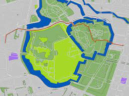

Projects
Automated Unit Test Generation (Ongoing)
➔ Generated unit test cases for Java methods using deep learning.
➔ Finetuned HuggingFace transformer models (BART, BERT) over the Methods2Test dataset
➔ Tech. used: Python, fariseq, PyTorch, HuggingFace, fairseq
View ProjectBug Prediction in Software
➔ Researched & developed features for ML models to predict bugs in Java classes.
➔ Extracted Source code metrics using CKJM extended tool.
➔ Extracted Code Change metrics from SVN files of the project.
➔ Improved performance of models (w.r.t. precision & recall) by approx. 15%
➔ Tech. used: Python, pandas, matplotlib, numpy, scikit-learn, and SVN system
View ProjectSarcasm Detection in News Headlines
➔ Used Natural Language Processing and Deep Learning to detect sarcasm from ”News headlines dataset for Sarcasm Prediction”
➔ Worked with Word2Vec embeddings, BERT, and LSTMs
➔ Tech. used: Python, scikit-learn, Keras, tensorflow, NLTk
View Project
Shortest Path using A-star algorithm
➔ Using the A-star algorithm, the project finds the shortest path from Rajiv Gandhi International Airport to BITS-Pilani, Hyderabad campus.
➔ Tech. used: Python, pandas, scikit-learn, OSMnx (Open Street Map API)
View ProjectMultiple College Library Management System
➔ Created a website that helps libraries keep track of all their inventory, students who have issued their books, details of all working personnel, etc
➔ Website was created using database concepts to maintain relations between various entities, and the Django framework available with Python.
➔ Tech. used: Python, Django, MySQL
View ProjectTracker & Trigger
➔ Built an application with the primary intention of assisting users with Inventory Management
➔ The application also keeps track of all the scheduled meetings, sets reminders, and creates to-do lists
View Project